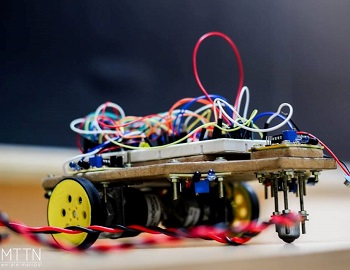
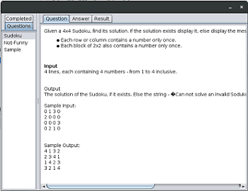
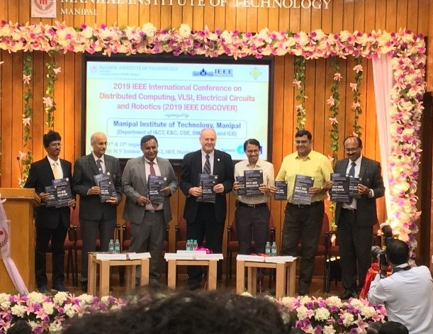
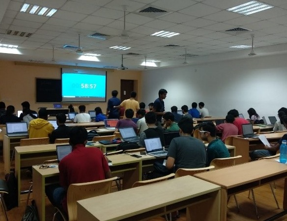
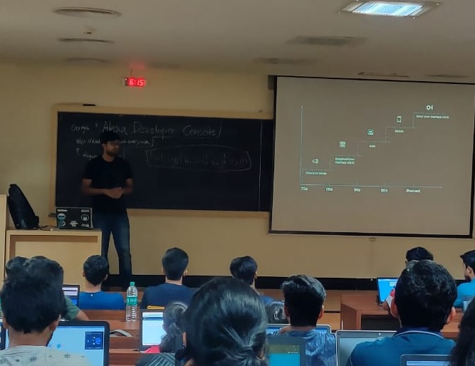
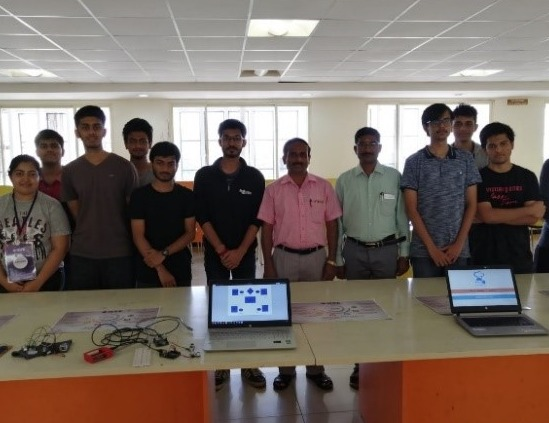

ABOUT IEEE
Student Branch Manipal
IEEE is the world's largest technical professional organization dedicated to advancing technology for the benefit of humanity. IEEE and its members inspire a global community to innovate for a better tomorrow through its highly cited publications, conferences, technology standards, and professional and educational activities. IEEE is the trusted “voice” for engineering, computing, and technology information around the globe. There are more than 420,000 IEEE members in over 160 countries. IEEE publishes a third of the world’s technical literature in electrical engineering, computer science, and electronics and is a leading developer of international standards that underpin many of today's telecommunications, information technology, and power-generation products and services.
ABOUT PROJECTS
|  |  |  |
 |
S.W.A.R.M. |
Autograder |
Disease Predictor |
Interview Bot |
IEEE Manipal |
IEEE Manipal |
IEEE Manipal |
IEEE Manipal |
|
Smart Wireless Autonomous Robotics Manipal. Moving a bot according to the coordinates given to the GUI. Presently we have accomplished seven bots. |
It is the offline version of online code judges like SPOJ, Topcoder, Hackerrank made in Java. The grader compiles and tests the code for correctness. |
Disease predictor uses the concept of Machine Learning and predicts the probability of disease based on symptoms. |
Interview Bot is a chat bot which can be used to analyse sentiments and expressions of a candidate giving interview.s |
ABOUT EVENTS
|  |  |  |  |
Membership Drive
Benefits of having an IEEE Membership
IEEE members can access information on local events and activities by signing in to MYIEEE , the members' personalized gateway to IEEE membership. In addition, members can also:
- Access individual Society memberships and subscriptions.
- Connect with local IEEE Sections and volunteer leadership.
- Find upcoming conferences.
- Learn more about individual benefits.
- Read the latest news from IEEE, IEEE Spectrum, IEEE Standards News, and The Institute.